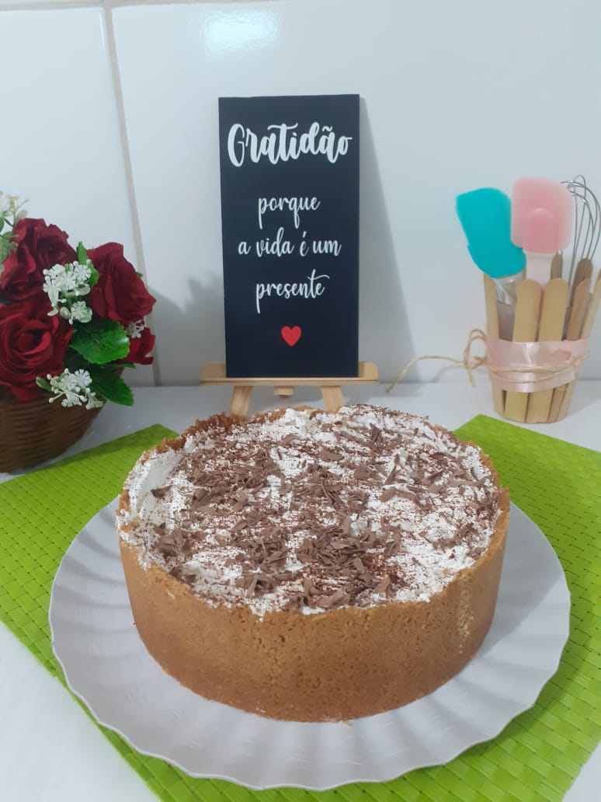

Irmãs e muito amigas, elas misturaram as delicadezas em suas cozinhas de casa, para demonstrar este carinho e dedicação para todos, se tornaram micro empreendedoras de Bolos Caseiros e Doces, em aproximadamente 3 anos de existência, se tornou fonte de renda de toda a família.
Como milhões de brasileiros empreendedores, começaram o negócio próprio por necessidade, a ideia foi transformar a culinária, um elemento que já fazia parte da rotina da família, em uma forma de complementar a renda.
“Já era um hábito nosso sentar em torno da mesa para comer meus bolos feitos de forma simples e artesanal e que sempre fizeram a alegria lá em casa”, conta Gislene "Gi".
Em sua cozinha própria de casa começou a produção de bolos deixou de ser um hobby para se tornar uma atividade profissional.
“O grande segredo era manter a essência que só um bolo caseiro é capaz de proporcionar”, observa Juliana "Ju". O empreendedorismo em família serviu para unir ainda mais as irmãs que hoje conta com ajuda dos seus próprios filhos.
E agora em 2021, iremos fazer 04 anos de existência e iremos comemorar esta nossa conquista com vocês nossos amigos e clientes, que acredita em nosso trabalho que dão uma grande força, mesmo com tudo tão difícil para continuarmos com esta garra e muita energia para continuar.
“Nosso crescimento se deu muito pela qualidade dos bolos, o que naturalmente gerou o famoso boca a boca”, Com a estruturação da rede, hoje, a empresa conta com um departamento de marketing e diversas ações e campanhas, sempre valorizando o cliente e os momentos especiais que ele pode passar ao redor de um bolo caseiro entre, outros doces como tortas, pão de mel, cone de chocolate e trufas.
“Ficamos muito felizes em ver todos os nossos filhos trabalhando e prosperando juntos. Não há nada mais gratificante... É uma sensação inexplicável ver algo que sempre foi uma realidade presente em nossa família e que mantenho até hoje - o bolo ao redor da mesa - se transformar num negócio e se comprovar na prática”, afirmam com orgulho, e extremamente emocionadas.